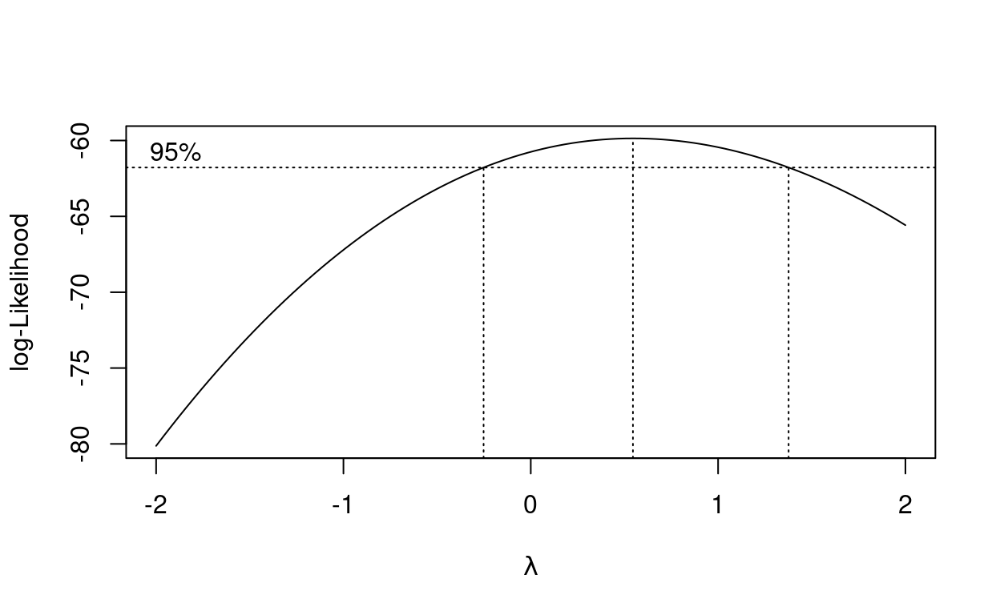

PRESENTACIÓN

El presente tutorial contiene preguntas relacionadas con regresión lineal simple, sus conceptos más importantes y problemas que se plantean para alcanzar los objetivos planteados en esta unidad
CONCEPTOS
MODELO DE REGRESIÓN
\[Y= \beta_{0} + \beta_{1} X + \varepsilon\] Donde:
- \({Y}\): Variable respuesta o dependiente.
- \({X}\): Variable predictora, independiente o regresora.
- \({\varepsilon}\): Error aleatorio
- \({\beta_0}\) es el intercepto y \({\beta_1}\) es la pendiente de la línea recta.
SUPUESTOS DE MODELO DE REGRESIÓN LINEAL SIMPLE
S1. La variable respuesta \(Y\) es una variable aleatoria cuyos valores para valores específicos de una variable \(X\)
S2. La variable \(X\) no se considera una variable aleatoria
S3. Los datos observados \({(x_i,y_i),\ i=1,\ldots,n}\) son tomados en un rango, por fuera del cual no se deben realizar inferencias (no realizar extrapolación)
S4. El modelo de regresión es lineal en los parámetros
S5. Si la ecuación de regresión es correcta, las variaciones que no se explican por la ecuación corresponden a errores aleatorios
S6. No existe correlación de errores \(Cor[\varepsilon_{i},\varepsilon_{j}]= 0\)
S7. El modelo de regresión es: \(Y_i = Y\vert X_i = E\left[Y \vert X_i\right] + \varepsilon_i \hspace{.8cm} i=1,2,\ldots,n\)
S8. Los errores se distribuyen \(\large \varepsilon_{i}\sim N(0,\sigma^{2}), \hspace{0.8cm} i=1,2,\ldots,n\)
S9. Los errores aleatorios \(\large \varepsilon_i\) son estadísticamente independientes.
S10. La varianza de los errores es contante : \(V[\varepsilon_{i}] = \sigma^{2}\)
En resumen : \[ \varepsilon_i\overset{\text{iid}}{\sim} N(0,\sigma^2), \hspace{.8cm}i=1,2,\ldots,n \]
RESUMEN
| código R | |
|---|---|
| datos | x = c(24.3,12.5,31.2,28,35.1,10.5,23.2,10,8.5,15.9,14.7,15) |
y = c(16.2,8.5,15,17,24.2,11.2,15,7.1,3.5,11.5,10.7,9.2) |
|
data = data.frame(x,y) |
|
| diagrama dispersión | library(ggplot2) ;
ggplot(data, aes(x,y))+ geom_point() |
| correlación | cor(x,y) |
| test de correlación Ho: Rho=0 | cor.test(x,y) |
| estimacion MCO | modelo1 <- lm(y~x) |
| estimación MV | modelo2 <- lm(y~x)$coefficients;emv |
| visualización de resultados | summary(modelo1) |
| gráfico de regresión | ggplot(data, aes(x,y))+ geom_point() + |
geom_smooth(method ="lm", level=0.95, formula = y~x) |
|
| yhat | predict(modelo1) |
| interbalos de confianza \(\beta_0\),\(\beta_1\) | confint(modelo1) |
| ANOVA | anova(modelo1) |
| residuos | rstandard(modelo1) |
| valores ajustados | fitted(modelo1) |
| gráfico normalidad | qqnorm(modelo1) ;
qqline(modelo1) |
| test de DW -autocorrelación | library("lmtest") ;
dwtest(modelo1) |
| test de Goldfeld-Quandt - varianza constante | gqtest(modelo1) |
| test de especificacion - Prueba RESET | resettest(y~x, power=2, type="regressor") |
| test de White - varianza cosntante | modelo1=lm(residuos~x) |
CUESTIONARIO
Pregunta 1
El siguiente resultado corresponde a la estimación de un modelo de regresión lineal simple.lm(formula = ventas ~ clientes, data = ventas) Coefficients: Estimate Std. Error t value Pr(>|t|) (Intercept) 19.9800 4.3897 4.552 0.000544 clientes 0.2606 0.0420 6.205 3.19e-05
Pregunta 2
El siguiente resultado corresponde a la estimación de un modelo de regresión lineal simple.
lm(formula = ventas ~ clientes, data = ventas) Coefficients: Estimate Std. Error t value Pr(>|t|) (Intercept) 19.9800 4.3897 4.552 0.000544 clientes 0.2606 0.1820 1.431780 0.175808
Pregunta 3
Pregunta 4
Al evaluar la forma funcional del modelo empleando la transformación Box-Cox, arroja el siguiente resultado

## [1] 0.5454545Pregunta 5
PROBLEMAS
Problema 1
La data biomasa contenida en paqueteMOD
contiene información sobre la biomasa total y la altura de 90 árboles.
Estime el modelo \(\text{biomasa} = \beta_{0}
+ \beta_{1} \text{altura} + \varepsilon\) mediate el método de
mínimos cuadrados ordinarios (MCO)
library(paqueteMOD)
data("biomasa")library(paqueteMOD)
data("biomasa")
lmlibrary(paqueteMOD)
data("biomasa")
modelo=lm(biomasa$bio_total ~ biomasa$altura)
summary(modelo)**Problema 2*
A partir de la data biomasa contenida en
paqueteMOD contiene información sobre la biomasa total y la
altura de 90 árboles. se puede estimar el modelo \(\text{biomasa} = \beta_{0} + \beta_{1}
\text{altura} + \varepsilon\) . A partir de los resultados
obtenidos en la estimación valide los supuestos sobre los errores:
- \(\varepsilon \sim Normal\)
- \(V[\varepsilon] = \sigma^{2}\)
- \(Cor[\varepsilon_{i},\varepsilon_{j}] = 0\)
- \(E[\varepsilon] = 0\)
library(paqueteMOD)
library(lmtest)
data(biomas)library(paqueteMOD)
library(lmtest)
data(biomas)
shapiro.test()
gqtest()
dwtest()
t.test()library(paqueteMOD)
library(lmtest)
data(biomas)
modelo=lm(biomasa$bio_total ~ biomasa$altura)
shapiro.test(modelo$residuals)
gqtest(modelo)
dwtest(modelo)
t.test(modelo$residuals)Problema 3
La data biomasa contenida en paqueteMOD
contiene información sobre la biomasa total y la altura de 90 árboles.
Verifique el valor de \(\lambda\) para
la constante de la transformación Box-Cox para establecer la
transformación apropiada de la variable dependiente en el modelo \(\text{biomasa} = \beta_{0} + \beta_{1}
\text{altura} + \varepsilon\)
library(paqueteMOD)
data(biomasa)library(paqueteMOD)
data(biomasa)
boxcox()library(paqueteMOD)
data(biomasa)
bc=boxcox(lm(biomasa$bio_total ~ biomasa$altura), lambda = -1:1)
(lambda <- bc$x[which.max(bc$y)])Problema 4
Para el modelo \(\text{biomasa} = \beta_{0}
+ \beta_{1} \text{altura} + \varepsilon\) , obtenido a partir de
la data biomasa contenida en paqueteMOD ,
verifique gráficamente el cumplimiento de los supuestos sobre los
errores.
library(paqueteMOD)
data(biomasa)
modelo=lm(biomasa$bio_total ~ biomasa$altura)library(paqueteMOD)
data(biomasa)
modelo=lm(biomasa$bio_total ~ biomasa$altura)library(paqueteMOD)
data(biomasa)
modelo=lm(biomasa$bio_total ~ biomasa$altura)
par(mfrow = c(2,2))
plot(modelo)